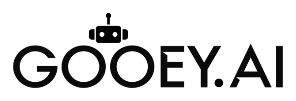
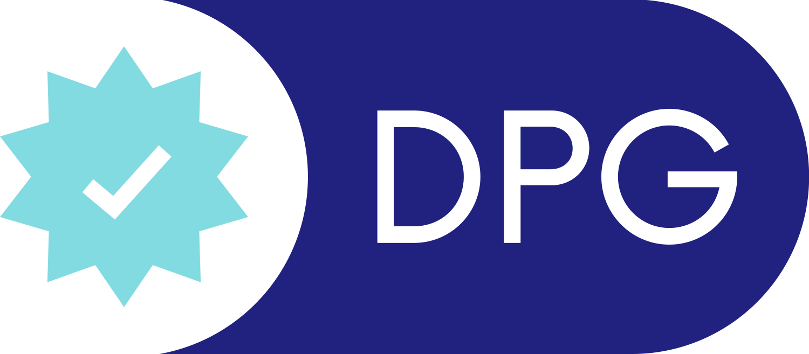
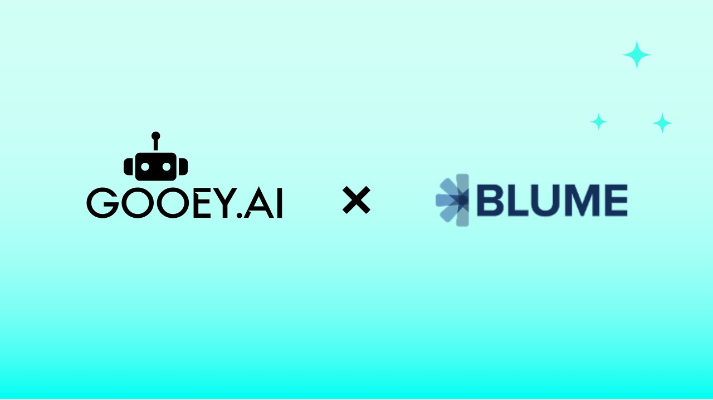

Open by design
Human-readable workflows, open-source code and infrastructure that can be examined and adapted.

Gooey.AI is a Digital Public Good LoginDigital Public Goods Alliance · Open Software
Gooey.AI has been reviewed by the Digital Public Goods Alliance and is now recognised as a digital public good under the Open Software category.

Recognised by the Digital Public Goods Alliance
The meaning
Digital public goods are open-source software, open data, open AI models, open standards and open content that contribute towards achieving the Sustainable Development Goals.
They adhere to applicable laws and best practices, do no harm, and are designed so others can use, adapt and extend them. The Digital Public Goods Alliance promotes the discovery, development and use of these solutions to help create a more equitable world.
For Gooey.AI, recognition as a digital public good is an important milestone in our journey to make AI more accessible, adaptable and inclusive. It recognises the value of building open technology for different communities and contexts.
What we believe
We are building the infrastructure that enables organisations, communities and innovators to create AI applications that speak their languages, understand their contexts and address their needs.
Human-readable workflows, open-source code and infrastructure that can be examined and adapted.
AI that works across languages and channels, and can respond to local knowledge and lived realities.
Reusable building blocks that help teams learn from one another instead of starting from zero.

Founder talk
Hear Gooey.AI founder Sean Blagsvedt discuss the state of AI, access and the opportunities created by reusable AI workflows.
Watch the talk ↗Why it matters
For us, this recognition is an affirmation of why we build.
We believe AI should not be limited by language, geography or access to technical resources. Through our open-source AI orchestration platform, we want to make it easier for organisations to build, adapt and deploy AI solutions that respond to local needs.
This belief comes to life through our work:
Trusted agricultural knowledge in farmers’ own languages, supporting food security, climate resilience and reduced inequalities.
Explore Farmer.Chat →Developed with Goethe-Institut to explore how representative datasets and participatory design can make AI more inclusive.
Read the research →Public evaluations of how AI models understand low-resource languages, addressing gaps in representation and access.
Explore evaluations →Our commitment
Being recognised as a digital public good reinforces our commitment to building technology that can be shared, adapted and extended across communities and contexts.